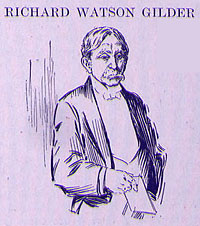

|  RICHARD WATSON GILDER said: I THOUGHT, Colonel Harvey, you knew it had been decided by the Court of Appeals in this State and by the Legislature assembled at Albany that I was not a poet. The argument was made by my enemies that I was, and the decision went the other way. To be called upon as a poet to-night, with so many other poets here, is exceedingly embarrassing. I thought I was called upon because I was a novelist. I published a serial novel forty-five years ago, and as yet the book rights have not been spoken for. Colonel Harvey asked me once to write a serial novel, and he did not know I had already done it. Mr. Chairman, ladies, and gentlemen, I have looked about for some phase of the distinguished subject before us which perhaps might not occur to the other speakers, and one, also, which might be treated with becoming brevity. The phase of the subject finally selected was, of course, not Mark Twain as a philosopher, moralist, satirist, historian, poet, preacher, patriot, pilot, portrait-draughtsman, traveler, lecturer, general kicker, and sham-smasher; nor Mark Twain in his early military character; nor Mark Twain, as he is sometimes called, the humorist, it may safely be claimed in the Fifth Assembly District, where we both reside; -- not any one of these, but Mark Twain simply the human being. It is in his capacity as a human being that I am particularly interested in him; and I may say, being a neighbor, particularly well posted. As a human being, in fact, Mark Twain is supremely interesting. Of course, he can tell stories, write stories, sing hymns, tell the truth, and do all sorts of strange and interesting things in an expert and fetching way; and yet to my mind he is chiefly remarkable as, for instance, his friends the President and the Emperor are remarkable for the power of his personality; for his dynamic force; for the strength of his convictions, the energy and spontaneity of his expression; for his strenuous and scornful hates and intense afflictions; and for his lightning-like vision of the shifting scenes in the tremendous tragi-comedy of life. In Massachusetts they call this sort of personal force "jasm," or they did in Dr. Holland's day. There is "jasm" behind and in Mark Twain's literary art; "jasm" in his ironically venerable front; "jasm" in his international, intercontinental jokes. There is nothing so seizing or so important in this world as personality, and the personality of the cheerful subject of these inadequate remarks is, to me, his particular point. HE is reeking with personality. It is, as I have intimated, precisely as a person, as a human being, that he is most entertaining. I found, however, that to do full justice to Mark Twain as a human being would require a thesis so detailed, learned and spacious that there is no time for it to-night. He and you will rejoice in this, I am sure, for thus is, at least temporarily, averted that fatal result which was intimated in a recent English school examination where it was distinctly stated by one of the contestants that "in the United States people are put to death by elocution." (Applause.) |